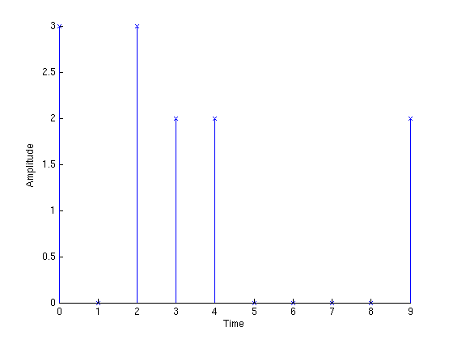
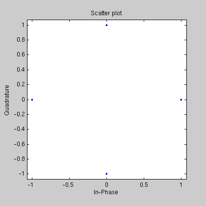
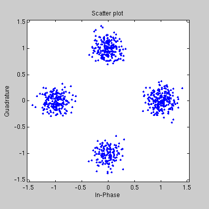
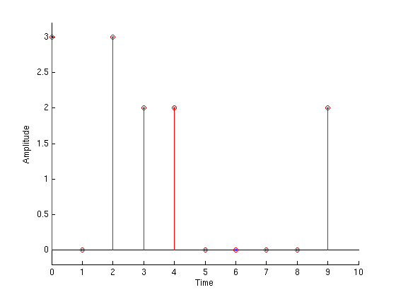
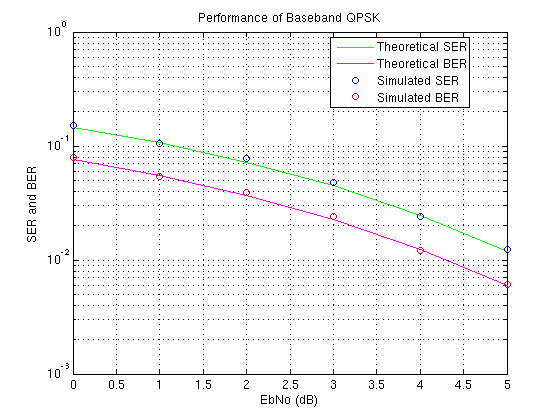

This demo shows how to simulate a basic Quarternary Phase Shift Keying (QPSK) communication link, and to generate empirical performance curves that can be compared to theoretical predictions.
The first step is to initialize variables for number of samples per symbol, number of symbols to simulate, alphabet size (M) and the signal to noise ratio. The last line seeds the random number generators.
nSamp = 8; numSymb = 100; M = 4; SNR = 14; seed = [12345 54321]; rand('state', seed(1)); randn('state', seed(2));
Next, use RANDSRC to generate random information symbols from 0 to M-1. Since the simulation is of QPSK, the symbols are 0 through 3. The first 10 data points are plotted.
numPlot = 10; rand('state', seed(1)); msg_orig = randsrc(numSymb, 1, 0:M-1); stem(0:numPlot-1, msg_orig(1:numPlot), 'bx'); xlabel('Time'); ylabel('Amplitude');
Use PSKMOD to phase modulate the data and RECTPULSE to upsample to a sampling rate 8 times the carrier frequency. Use SCATTERPLOT to see the signal constellation.
grayencod = bitxor(0:M-1, floor((0:M-1)/2));
msg_gr_orig = grayencod(msg_orig+1);
msg_tx = pskmod(msg_gr_orig,M);
msg_tx = rectpulse(msg_tx,nSamp);
h1 = scatterplot(msg_tx);
set(h1,'position',[93 680 420 420]);
Then use AWGN to add noise to the transmitted signal to create the noisy signal at the receiver. Use the 'measured' option to add noise that is 14 dB below the average signal power (SNR = 14 dB). Plot the constellation of the received signal.
randn('state', seed(2)); msg_rx = awgn(msg_tx, SNR, 'measured', [], 'dB'); h2 = scatterplot(msg_rx);
Use INTDUMP to downsample to the original information rate. Then use PSKDEMOD to demodulate the signal, and detect the transmitted symbols. The detected symbols are plotted in red stems with circles and the transmitted symbols are plotted in blue stems with x's. The blue stems of the transmitted signal are shadowed by the red stems of the received signal. Therefore, comparing the blue x's with the red circles indicates that the received signal is identical to the transmitted signal.
close(h1,h2); msg_rx_down = intdump(msg_rx,nSamp); msg_gr_demod = pskdemod(msg_rx_down,M); [dummy graydecod] = sort(grayencod); graydecod = graydecod - 1; msg_demod = graydecod(msg_gr_demod+1)'; stem(0:numPlot-1, msg_orig(1:numPlot), 'bx'); hold on; stem(0:numPlot-1, msg_demod(1:numPlot), 'ro'); hold off; axis([ 0 numPlot -0.2 3.2]); xlabel('Time'); ylabel('Amplitude');
Finally, use BITERR and SYMERR to compare the original message to the demodulated message. BITERR is used to determine the bit error rate and SYMERR is used to determine the symbol error rate.
[errorBit ratioBit] = biterr(msg_orig, msg_demod, log2(M)); [errorSym ratioSym] = symerr(msg_orig, msg_demod);
The next step executes an example file SIMBASEBANDEX, which is a complete simulation example for QPSK. It demonstrates how to create simulation drivers in MATLAB that plot the simulation results as they are generated.
The green and magenta lines are the theoretical bit error rate (BER) and symbol error rate (SER) performance curves for QPSK, respectively. The example, SIMBASEBANDEX, plots the simulated BER and SER in red and blue lines, respectively. SIMBASEBANDEX uses PSKMOD and PSKDEMOD to simulate PSK at baseband using a complex envelope representation of the modulated signal.
simbasebandex(0:5);